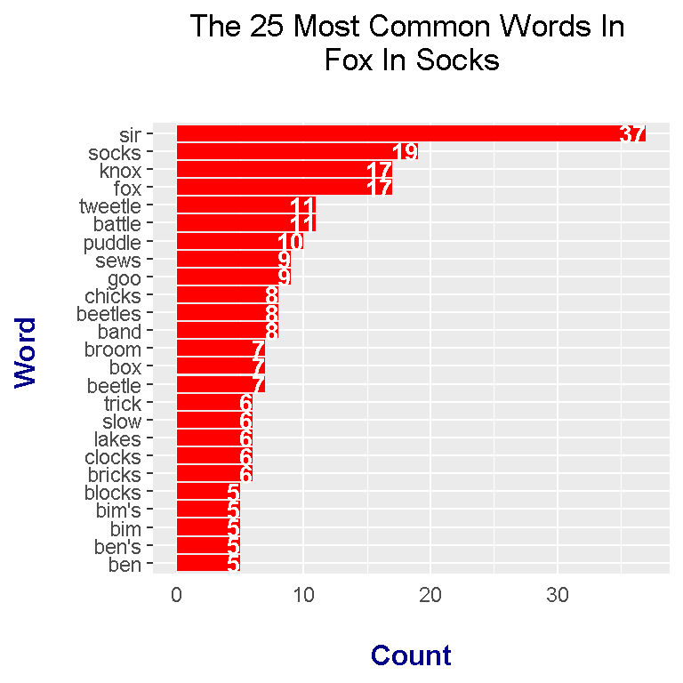

Hello there. In this page, the focus is on text analysis (text mining) with the R programming language on the Fox In Socks book. Read out aloud Youtube videos such as this are available.
Source: http://ecx.images-amazon.com/images/I/51KGN0dwloL._SL600_.jpg
In R, you want to load the following libraries:
To load libraries into R, use the library() function. For installation of packages, use install.packages("pkg_name").
# Text Mining on the Dr. Suess - Fox In Socks
# Text Version Of Book Source:
# http://ai.eecs.umich.edu/people/dreeves/Fox-In-Socks.txt
# 1) Word Counts In Fox In Socks
# 2) Bigrams in Fox In Socks
# 3) Sentiment Analysis - nrc, bing and AFINN Lexicons (Three In One Plot)
#----------------------------------
# Load libraries into R:
# Install packages with install.packages("pkg_name")
library(dplyr)
library(tidyr)
library(ggplot2)
library(tidytext)
Note that the Fox In Socks book is obtained from http://ai.eecs.umich.edu/people/dreeves/Fox-In-Socks.txt as indicated in the comments in the above code.
With text mining/analysis, it is possible to obtain word counts from books or any piece of text. Knowing word counts from a book gives an idea of what the book is about and which words are emphasized.
The text file can be found online. There is no need for setting a directory or copying and pasting.
foxSocks_book <- readLines("http://ai.eecs.umich.edu/people/dreeves/Fox-In-Socks.txt")
# Preview the start of the book:
foxSocks_book_df <- data_frame(Text = foxSocks_book) # tibble aka neater data frame
head(foxSocks_book_df, n = 15) ## # A tibble: 15 x 1
## Text
## <chr>
## 1 Fox in Socks by Dr. Seuss
## 2 -------------------------
## 3
## 4 Fox
## 5 Socks
## 6 Box
## 7 Knox
## 8
## 9 Knox in box.
## 10 Fox in socks.
## 11
## 12 Knox on fox in socks in box.
## 13
## 14 Socks on Knox and Knox in box.
## 15
Notice that there is the title and a bunch of dashed lines at the top of this text file (website link). The title and dashed lines are not of importance and can be removed in R. This can be done by selecting only from the fourth line onwards.
# Remove first three lines that say Fox In Socks by Dr. Seuss,
# ---------- and a blank line:
foxSocks_book_df <- foxSocks_book_df[4:nrow(foxSocks_book_df), ]
From the tidytext package in R, the unnest_tokens() function is the first step to obtaining word counts from the Fox In Socks book.
# Unnest tokens: each word in the stories in a row:
foxSocks_words <- foxSocks_book_df %>%
unnest_tokens(output = word, input = Text)
# Preview with head() function:
head(foxSocks_words, n = 10)## # A tibble: 10 x 1
## word
## <chr>
## 1 fox
## 2 socks
## 3 box
## 4 knox
## 5 knox
## 6 in
## 7 box
## 8 fox
## 9 in
## 10 socks
English words such as for, the, and, me, myself carry very little meaning on their own. These words are called stop words. An anti join can be used to keep words that are not stop words in Fox In Socks.
# Remove English stop words from Fox In Socks:
# Stop words include me, you, for, myself, he, she
foxSocks_words <- foxSocks_words %>%
anti_join(stop_words)## Joining, by = "word"
From foxSocks_words, word counts can be obtained with the use of the count() function from R’s dplyr package.
# Word Counts in Fox In Socks:
foxSocks_wordcounts <- foxSocks_words %>% count(word, sort = TRUE)
# Print top 15 words
head(foxSocks_wordcounts, n = 15)## # A tibble: 15 x 2
## word n
## <chr> <int>
## 1 sir 37
## 2 socks 19
## 3 fox 17
## 4 knox 17
## 5 battle 11
## 6 tweetle 11
## 7 puddle 10
## 8 goo 9
## 9 sews 9
## 10 band 8
## 11 beetles 8
## 12 chicks 8
## 13 beetle 7
## 14 box 7
## 15 broom 7
The word counts results can be displayed as a horizontal bar graph with the use of ggplot2 graphics in R. Here is the code and output for the top twenty five words in Fox In Socks (after filtering out the stopwords).
# Plot of Word Counts (Top 25 Words):
foxSocks_wordcounts[1:25, ] %>%
mutate(word = reorder(word, n)) %>%
ggplot(aes(word, n)) +
geom_col(fill = "red") +
coord_flip() +
labs(x = "Word \n", y = "\n Count ", title = "The 25 Most Common Words In \n Fox In Socks \n") +
geom_text(aes(label = n), hjust = 1, colour = "white", fontface = "bold", size = 3.5) +
theme(plot.title = element_text(hjust = 0.5),
axis.ticks.x = element_blank(),
axis.title.x = element_text(face="bold", colour="darkblue", size = 12),
axis.title.y = element_text(face="bold", colour="darkblue", size = 12))
Top words include sir, socks, knox, fox, tweetle, and battle. From the top 25 words, there are repeats in the sense of having plurals and singular forms.
Instead of the counts of single words, counts of two word phrases or bigrams can be obtained.
# 2) Bigrams (Two-Word Phrases) In Fox In Socks
foxSocks_bigrams <- foxSocks_book_df %>%
unnest_tokens(bigram, input = Text, token = "ngrams", n = 2)
# Look at the bigrams:
foxSocks_bigrams## # A tibble: 841 x 1
## bigram
## <chr>
## 1 fox socks
## 2 socks box
## 3 box knox
## 4 knox knox
## 5 knox in
## 6 in box
## 7 box fox
## 8 fox in
## 9 in socks
## 10 socks knox
## # ... with 831 more rows
Removing stop words from the bigrams requires a bit more work. In this case, tidyr and the dplyr packages are used together in R. First, the separate() function from tidyr is used to split the bigrams into their two separate words. Any stopwords that are in the bigrams are removed with two filter() functions. After filtering, counts are obtained.
# Remove stop words from bigrams with tidyr's separate function
# along with the filter() function
foxSocks_bigrams_sep <- foxSocks_bigrams %>%
separate(bigram, c("word1", "word2"), sep = " ")
foxSocks_bigrams_filt <- foxSocks_bigrams_sep %>%
filter(!word1 %in% stop_words$word) %>%
filter(!word2 %in% stop_words$word)
# Filtered bigram counts:
foxSocks_bigrams_counts <- foxSocks_bigrams_filt %>%
count(word1, word2, sort = TRUE)
head(foxSocks_bigrams_counts, n = 15)## # A tibble: 15 x 3
## word1 word2 n
## <chr> <chr> <int>
## 1 knox sir 5
## 2 slow joe 5
## 3 tweetle beetle 5
## 4 tweetle beetles 5
## 5 luke luck 4
## 6 paddle battle 4
## 7 quick trick 4
## 8 sue sews 4
## 9 beetles battle 3
## 10 bends ben's 3
## 11 blue goo 3
## 12 crow's clothes 3
## 13 fox sir 3
## 14 joe crow 3
## 15 puddle paddle 3
The separated words can be reunited together with tidyr’s unite() function.
# Unite the words with the unite() function:
foxSocks_bigrams_counts <- foxSocks_bigrams_counts %>%
unite(bigram, word1, word2, sep = " ")
foxSocks_bigrams_counts## # A tibble: 199 x 2
## bigram n
## * <chr> <int>
## 1 knox sir 5
## 2 slow joe 5
## 3 tweetle beetle 5
## 4 tweetle beetles 5
## 5 luke luck 4
## 6 paddle battle 4
## 7 quick trick 4
## 8 sue sews 4
## 9 beetles battle 3
## 10 bends ben's 3
## # ... with 189 more rows
After unification, the results can be displayed with ggplot2 graphics.
# We can now make a plot of the word counts.
# ggplot2 Plot Of Top 25 Bigrams From Fox In Socks:
foxSocks_bigrams_counts[1:25, ] %>%
ggplot(aes(reorder(bigram, n), n)) +
geom_col(fill = "#b3b06f") +
coord_flip() +
labs(x = "Bigram \n", y = "\n Count ", title = "The 25 Most Common Bigrams In \n Dr. Seuss Fox In Socks \n") +
geom_text(aes(label = n), hjust = 1.2, colour = "black", fontface = "bold") +
theme(plot.title = element_text(hjust = 0.5, colour = "darkblue", size = 14),
axis.title.x = element_blank(),
axis.ticks.x = element_blank(),
axis.text.x = element_blank(),
axis.title.y = element_text(face="bold", colour="darkred", size = 12))
The bigrams tied for first place at a count of 5 are:
Notice how a lot of these bigrams do rhyme. Having kids get used to rhymes works on reading and listening skills.
A big part of sentiment analysis involves the analysis of negative and positive words in text. The three main lexicons which (subjectively) scores and/or categorizes words are nrc, bing and AFINN.
In my other text mining posts, I have separate plots for sentiment analysis for each of the three lexicons. This time around the three sentiment plots will be displayed all in one.
In the code below, the word_labels_nrc variable stores plot labels which is used later. An inner_join along with get_sentiments("nrc") is used to select words from foxSocks_wordcounts that are also in get_sentiments("nrc"). Since the nrc lexicon has additional sentiments such as trust, fear and anger, the filter() function is used to select only words that are categorized as negative or positive.
# 3) Sentiment Analysis
# Are the stories positive, negative, neutral?
# http://lightonphiri.org/blog/ggplot2-multiple-plots-in-one-graph-using-gridextra
#### Using nrc, bing and AFINN lexicons
word_labels_nrc <- c(
`negative` = "Negative Words",
`positive` = "Positive Words"
)
### nrc lexicons:
# get_sentiments("nrc")
foxSocks_words_nrc <- foxSocks_wordcounts %>%
inner_join(get_sentiments("nrc"), by = "word") %>%
filter(sentiment %in% c("positive", "negative"))
# Preview common words with sentiment label:
head(foxSocks_words_nrc, n = 12)## # A tibble: 12 x 3
## word n sentiment
## <chr> <int> <chr>
## 1 sir 37 positive
## 2 battle 11 negative
## 3 goo 9 negative
## 4 trick 6 negative
## 5 sue 5 negative
## 6 luck 4 positive
## 7 paddle 4 positive
## 8 fight 2 negative
## 9 muddle 2 negative
## 10 pig 2 negative
## 11 sick 2 negative
## 12 dumb 1 negative
Instead of displaying the nrc sentiment plot right away, the plot is saved into the variable nrc_plot. The intent is to save the three sentiment plots into three separate variables and then use them to display all three bar plots in one graph.
# Sentiment Plot with nrc Lexicon
nrc_plot <- foxSocks_words_nrc %>%
ggplot(aes(x = reorder(word, n), y = n, fill = sentiment)) +
geom_bar(stat = "identity", position = "identity") +
geom_text(aes(label = n), colour = "black", hjust = 1, fontface = "bold", size = 3) +
facet_wrap(~sentiment, nrow = 2, scales = "free_y", labeller = as_labeller(word_labels_nrc)) +
labs(x = "\n Word \n", y = "\n Word Count ", title = "nrc Lexicon \n Sentiment Analysis On Fox In Socks \n") +
theme(plot.title = element_text(hjust = 0.5),
axis.title.x = element_text(face="bold", colour="darkblue", size = 12),
axis.title.y = element_text(face="bold", colour="darkblue", size = 12),
strip.background = element_rect(fill = "lightblue"),
strip.text.x = element_text(size = 10, face = "bold")) +
scale_fill_manual(values=c("#FF0000", "#01DF3A"), guide=FALSE) +
coord_flip()
With the bing lexicon, words are categorized as either negative or positive. The code for dealing with the bing lexicon is very similar to the one with the nrc case. Instead of the filter() function, there is the ungroup() function.
### bing lexicon:
# get_sentiments("bing")
word_labels_bing <- c(
`negative` = "Negative Words",
`positive` = "Positive Words"
)
foxSocks_words_bing <- foxSocks_wordcounts %>%
inner_join(get_sentiments("bing"), by = "word") %>%
ungroup()
# Preview the words and counts:
head(foxSocks_words_bing, n = 15)## # A tibble: 15 x 3
## word n sentiment
## <chr> <int> <chr>
## 1 slow 6 negative
## 2 trick 6 negative
## 3 sue 5 negative
## 4 likes 4 positive
## 5 luck 4 positive
## 6 easy 3 positive
## 7 bent 2 negative
## 8 breaks 2 negative
## 9 breeze 2 positive
## 10 free 2 positive
## 11 freeze 2 negative
## 12 muddle 2 negative
## 13 pig 2 negative
## 14 poor 2 negative
## 15 sick 2 negative
The bing sentiment plot in R is saved into the bing_plot variable for later use.
# Sentiment Plot with bing Lexicon:
bing_plot <- foxSocks_words_bing %>%
ggplot(aes(x = reorder(word, n), y = n, fill = sentiment)) +
geom_bar(stat = "identity", position = "identity") +
geom_text(aes(label = n), colour = "black", hjust = 1, fontface = "bold", size = 3) +
facet_wrap(~sentiment, nrow = 2, scales = "free_y", labeller = as_labeller(word_labels_bing)) +
labs(x = "\n Word \n", y = "\n Word Count ", title = "bing Lexicon \n Sentiment Analysis On Fox In Socks \n") +
theme(plot.title = element_text(hjust = 0.5),
axis.title.x = element_text(face="bold", colour="darkblue", size = 12),
axis.title.y = element_text(face="bold", colour="darkblue", size = 12),
strip.background = element_rect(fill = "#BEE1D3"),
strip.text.x = element_text(size = 10, face = "bold", colour = "black")) +
scale_fill_manual(values=c("#FF0000", "#01DF3A"), guide=FALSE) +
coord_flip()
Words under the AFINN lexicon have a numeric score from -5 to +5. I have included a new column which categorizes the word as negative if the score is below 0 and positive if the score is above 0.
### AFINN lexicon:
# Change labels
# (Source: https://stackoverflow.com/questions/3472980/ggplot-how-to-change-facet-labels)
foxSocks_words_AFINN <- foxSocks_wordcounts %>%
inner_join(get_sentiments("afinn"), by = "word") %>%
mutate(is_positive = score > 0)
head(foxSocks_words_AFINN, n = 15)## # A tibble: 15 x 4
## word n score is_positive
## <chr> <int> <int> <lgl>
## 1 battle 11 -1 FALSE
## 2 blocks 5 -1 FALSE
## 3 likes 4 2 TRUE
## 4 luck 4 3 TRUE
## 5 easy 3 1 TRUE
## 6 fight 2 -1 FALSE
## 7 free 2 1 TRUE
## 8 poor 2 -2 FALSE
## 9 sick 2 -2 FALSE
## 10 stop 2 -1 FALSE
## 11 battles 1 -1 FALSE
## 12 block 1 -1 FALSE
## 13 dumb 1 -3 FALSE
## 14 fun 1 4 TRUE
## 15 hate 1 -3 FALSEword_labels_AFINN <- c(
`FALSE` = "Negative Words",
`TRUE` = "Positive Words"
)
afinn_plot <- foxSocks_words_AFINN %>%
ggplot(aes(x = reorder(word, n), y = n, fill = is_positive)) +
geom_bar(stat = "identity", position = "identity") +
geom_text(aes(label = n), colour = "black", hjust = 1, fontface = "bold", size = 3) +
facet_wrap(~is_positive, scales = "free_y", nrow = 2, labeller = as_labeller(word_labels_AFINN)) +
labs(x = "\n Word \n", y = "\n Word Count ", title = "AFINN Lexicon \n Sentiment Analysis On Fox In Socks \n",
fill = c("Negative", "Positive")) +
theme(plot.title = element_text(hjust = 0.5),
axis.title.x = element_text(face="bold", colour="darkblue", size = 12),
axis.title.y = element_text(face="bold", colour="darkblue", size = 12),
strip.background = element_rect(fill = "#D5ADA4"),
strip.text.x = element_text(size = 10, face = "bold", colour = "black")) +
scale_fill_manual(values=c("#FF0000", "#01DF3A"), guide=FALSE) +
coord_flip()
Putting multiple plots into one graph is actually quite simple. The grid.arrange() function from the gridExtra R package takes in plot objects and an argument for the number of columns.
# Mutliple plots in one graph:
library(gridExtra)## Warning: package 'gridExtra' was built under R version 3.4.4##
## Attaching package: 'gridExtra'## The following object is masked from 'package:dplyr':
##
## combine# arrange plots in grid
grid.arrange(nrc_plot, bing_plot, afinn_plot, ncol = 3)
# nrc plot alone:
nrc_plot# bing plot alone:
bing_plot# afinn plot alone:
afinn_plot
From the nrc lexicon sentiment analysis results, the top positive words are sir, paddle and luck. I think sir is considered positive as it is used as a sign of respect. I am not sure why paddle is positive. Negative words from the nrc lexicon include battle, goo, trick and sue. Note that lexicons are not great with context. Sue can be a verb or a name. In this case, nrc recognizes sue as a negative verb.
The bing lexicon does not recognize battle as a negative word but it does recognize the words slow, poor and freeze as negative. Positive words from the bing lexicon include luck, likes, easy, free and breeze. Sir is not included here.
In the AFINN lexicon results, negative words include battle, blocks, stop, sick, poor and fight. Positive words does not include sir but it does include the words luck, likes, easy, free, slick and fun.
According to bing and AFINN, the Fox In Socks is more negative than positive if you are looking at word counts (after filtering out stopwords). Since nrc considers sir as positive, nrc considers the book as more positive than negative. These lexicons are subjective and not perfect. Some information is better than none in this case.
{kind=link}